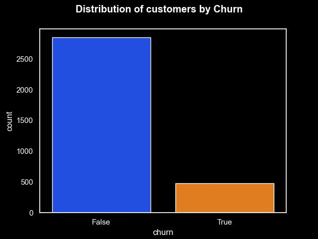
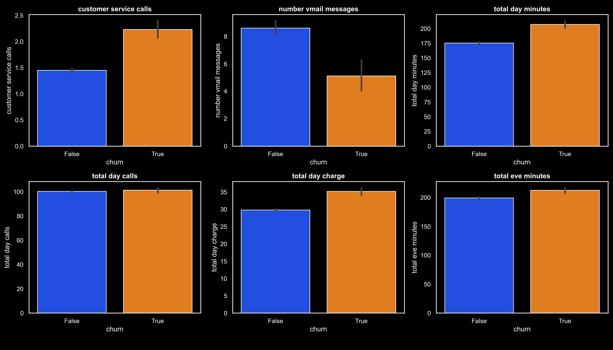
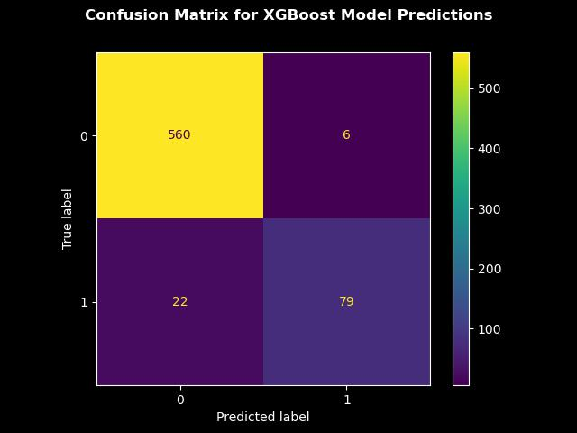

The rise of machine learning and artificial intelligence has opened increasing avenues for businesses to use data in problem-solving. As I have progressed in my studies of modern analytical techniques, I found that it can be easy to focus excessively on technical details or model performance and lose sight of the underlying objective. I realized that there were endless models, mathematical techniques and tools to learn and wanted to avoid falling into the trap of possessing a shed full of tools which I had no reason to purchase.
In this project, I created an intuitive business scenario where a business could realize value from utilizing some of the machine learning techniques I have been studying. The intent of this project is not to create the best machine learning model, but rather to build an understanding of their use cases by demonstrating the process and context within which such techniques could create value.
The scenario is that a new telecommunication company in New Zealand, ‘Spork’ is operating on a contract-based business model and exploring ways to increase its revenues. The business analyst analyzes potential strategies and identifies three options:
Determining which is the best strategy to pursue involves building an understanding of the context of the business problem. The telecommunication industry in the region is incredibly competitive and the data on customer acquisition costs may present an undesirable level of risk involved in launching a new marketing campaign. A previous business analysis initiative has documented that the business has limited upselling opportunities and previous efforts have led to customer backlash and the strategy has been ruled out entirely.
After consulting with the relevant stakeholders, the business analyst wants to investigate the third option and has been requested to create a business case for developing and deploying a machine learning model to increase revenues. The business analyst is provided with some sample data from the companies' internal customer database.
The data is a sample of open-source data from an unnamed telecommunications company made available to the public on Kaggle.
In the context of this project, we will assume that it contains customer information from ‘Spork’ for the last contract period retrieved from their relational database system. There are 3333 observations where information is provided on customer information such as total minutes, total charges, type of plan and whether the customer continued or canceled their plan i.e churned. The business analyst has been assured that the data is generally representative of the last two years of business.
The business objective in this scenario is to increase revenues. We are testing the hypothesis that revenues could be increased by reducing the number of customers that leave by identifying them early and convincing them to stay. Estimates and calculations should be made to estimate whether the ROI on such an initiative would be greater than launching a new marketing campaign.
The model below can help to begin identifying requirements and build an initial understanding how the business objective can be met:
Evaluating this workflow helps in devising the necessary questions to be asked in order for such a solution to provide the required value, such as:
A good first step is to review the data and extract insights about customer churn. Using python to visualize the distributions of churned and non-churned customers, it is observed that out of the sample of 3333 customers, 483 did not renew their contracts accounting for a 14.5% churn rate. A figure of 14.5% is discovered to be a little high for the industry and region, and after consulting with the customer retention team it is estimated that 60% of these customers could be persuaded to stay if they were provided with the necessary information.
In order for machine learning to produce value, we would expect to see at least some differences in the distribution of variables for churned and non-churned customers. By calculating the averages of the metrics collected by the company for customers in each group we can get some indication of whether a machine learning model would be effective. Visualizing the data, it is observed that there appear to be some key differences in the characteristics of churned vs retained customers such as the number of customer service calls and total minutes of calltime.
A little over 3000 observations is not a great quantity of data to train a model on, but as long as the sample is representative of the population, there is reason to suggest building a prototype model machine learning model will give us a good estimate of what can be achieved.
Provided a situation where historical data is made available on customer characteristics for both churned and retained customers, predicting customer churn is a binary classification problem.
I prepared the data for a number of logistic regression/classification models. Categorical variables were encoded using one-hot encoding and standardscaler() from the scikit-learn library was used to standardize all variables. The data was then split into training and test sets using a ratio of 80/20 to produce sets of 2666 and 667 observations respectively. Because the dataset was heavily imbalanced in terms of class distributions, I stratified the data to ensure that the training and test sets were split with the same distribution of class values.
The test data was looped through and fitted to a number of models that are commonly used for predicting a binary outcome of a categorical variable. The models used and their relevant evaluation metrics are outlined in the table below:
| Model | Accuracy | F1 Score | Recall Score |
|---|---|---|---|
| Nearest Neighbors | 0.89 | 0.73 | 0.39 |
| Linear SVM | 0.85 | 0.46 | 0.00 |
| RBF SVM | 0.85 | 0.46 | 0.00 |
| Decision Tree | 0.94 | 0.86 | 0.67 |
| Random Forest | 0.91 | 0.76 | 0.41 |
| Neural Net | 0.93 | 0.85 | 0.61 |
| AdaBoost | 0.88 | 0.70 | 0.37 |
| Naive Bayes | 0.85 | 0.70 | 0.46 |
| QDA | 0.86 | 0.71 | 0.47 |
| XGBoost | 0.96 | 0.91 | 0.78 |
| LightGBM | 0.96 | 0.91 | 0.76 |
For classification tasks we would normally be concerned with evaluating a model's accuracy score, but in the context of our business problem we are particularly concerned with minimizing the incidence of failing to predict when a customer will churn (Type II error) which is captured by the recall score. Additionally, due to the imbalanced class distributions noted above it would also be wise to look at the F-1 Score which takes the harmonic mean of precision and recall.
Based on the sample data, the best fit measured by both accuracy and F1 score is produced by the XGBoost and LightGBM models, with XGboost having a slight higher recall score (0.78 compared with 0.76). XGboost is a versatile machine learning model which utilizes boosting to create and add decision trees sequentially where each new iteration attempts correct the mistakes made by its predecessor.
The confusion matrix for the model predictions provides useful information for us to understand its performance in the context of our business problem. We can see that for the 667 unseen observations (data that the model was not trained on), 79 customers would have been correctly predicted to churn and there would have been six instances of customers who did not churn who would have been falsely predicted to (Type I error). In our scenario, the risks associated with making a type I error are relatively minor, as mislabeled customers would simply be passed on to the customer retention team. The error of greater relevance to the business problem is a type II error where the model fails to identify a customer who churned. In this case there were 22 instances of type II error meaning that 76% of customers who churned were able to be identified prior to the expiration of their contract.
The draft model based on the sample data suggests that somewhere in the realm of 70-80% of customers who leave the service can be predicted in advance which can certainly be used to help increase revenues. However, rather than relying on a black box model, looking under the hood and understanding the process with which the predictions are made can help with evaluation and even give us insights on the root cause of the problem. This was be done by utilizing graphviz from within python to visualize the decision tree used by the model:
The diagram illustrates how the model identifies potential churn customers. Through standardizing our variables with StandardScaler(), interpreting the decision nodes' variable values necessitates evaluating the values in terms of standard deviations away from the mean. Notably, the largest subset of data points classed as 'churn' were those where 'total day charge' were below -0.11 standard deviations from the mean, and 'customer service calls' exceeded the mean by more than 1.47 standard deviations. Beyond the value proposed by the model's predictive abilities, interpreting the decision process utilized by the model and verifying it with relevant subject matter experts could help validate it and provide additional value.
Although the model is a prototype and there may be significant work remaining in terms of optimizing its configuration, training it on additional data and deploying it, we can now make a significantly more informed decision on what the optimal strategy is to increase revenues.
Conservatively estimating a 75% accuracy rate in identifying churn customers, and multiplying it by the estimated 60% figure provided by customer retention team it is more than feasible that customer churn could be reduced by 45% or more. If we assume that Spork has 400,000 customers and apply the churn rate of 14.5%, 0.45 x 400,000 x 0.145 = 26,100 customers worth of additional revenue could be generated each period for the lifetime of the solution. We would then estimate the costs involved in developing, deploying and maintaining the solution at scale to estimate ROI.
This could then be compared with estimates of the ROI of increasing marketing efforts to attract more customers and used in conjunction with other factors such as risks and time frames to select the best option.
The analysis conducted in this project was not intended to be exhaustive but merely served as an exercise in demonstrating my analytical process as well as building an understanding of how some of the techniques I have been studying could be applied in a business context.
There are certainly improvements that could be made to the model building process including evaluation of ROC/AUC scores and tuning of hyperparameters. There are certain limitations and solutions to address them that I would have liked to explore if I had more time.
All data analysis and model creation was done in Python, and can be viewed in the form of an Ipython notebook here: